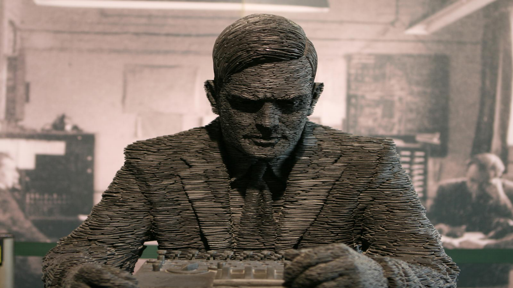
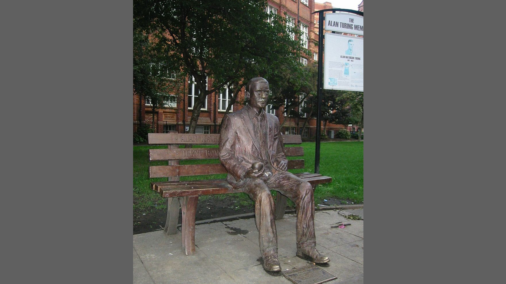
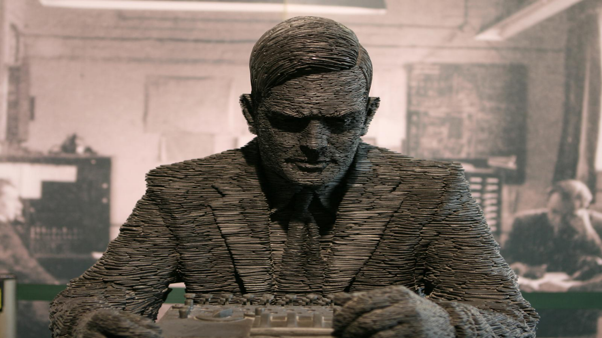
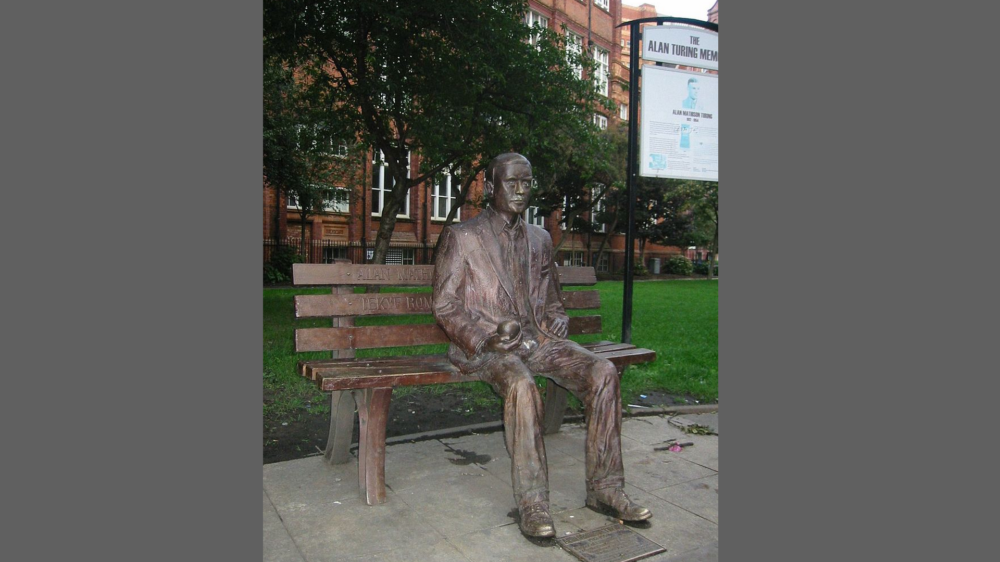

Depuis 1966, l’Association for Computing Machinery décerne annuellement le prix Turing (« Turing Award ») à des personnes ayant apporté une « contribution majeure d'importance durable » au domaine de la recherche informatique. Cette récompense est souvent considérée comme l'équivalent du prix Nobel pour l'informatique. Le récipiendaire est invité à donner une conférence que l'on appelle la conférence du prix Turing (« Turing Award lecture »). La British Computer Society et l'Institution of Engineering and Technology ont appelé Turing Lecture la leçon publique qu'ils demandent à une personnalité de renom, dans divers lieux prestigieux de Grande-Bretagne. En février 2011, au terme d'une vente aux enchères, des documents rédigés par Turing durant la Seconde Guerre mondiale sont acquis par le musée de Bletchley Park avec l'aide du National Heritage Memorial Fund afin d'éviter leur départ à l'étranger. Plusieurs villes ont décidé de nommer une rue, une place, un parvis, une allée ou un équipement public en son honneur, par exemple Manchester et Guildford au Royaume-Uni. Pour la France on en trouve à Clermont-Ferrand, Paris (vote fin 2016, près de la Station F incubateur dédié aux technologies numériques, Paris 13e), Saint-Fargeau-Ponthierry, Aubière et Anzin. De nombreuses universités ou départements d'informatique ont un amphithéâtre ou une salle Turing. Le 15 juillet 2019, Alan Turing est désigné par la Banque d'Angleterre pour figurer sur les prochains billets de banque anglais de 50 £ valables dès 2022. Il est ainsi la première personnalité de la communauté LGBT à figurer sur un papier-monnaie. Le futur billet affichera de nombreux éléments évoquant sa carrière, notamment une ligne en code binaire. Celle-ci, convertie en valeurs décimales, donne 23061912, c'est-à-dire un codage de la date de naissance de Turing, à savoir le 23 juin 1912. Salvatore Adamo lui rend hommage dans sa chanson de 2012 Alan et la pomme